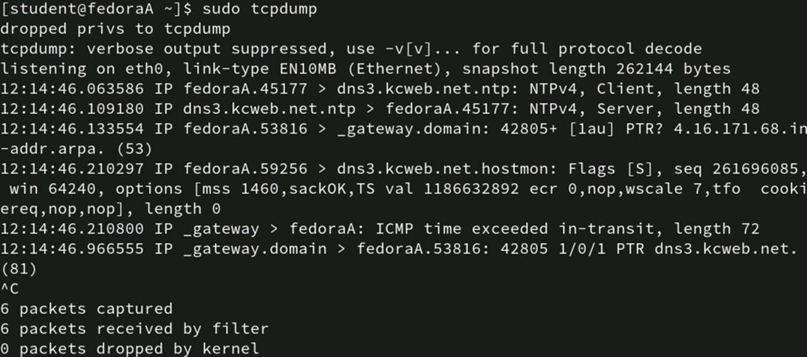
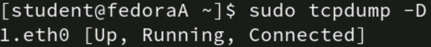
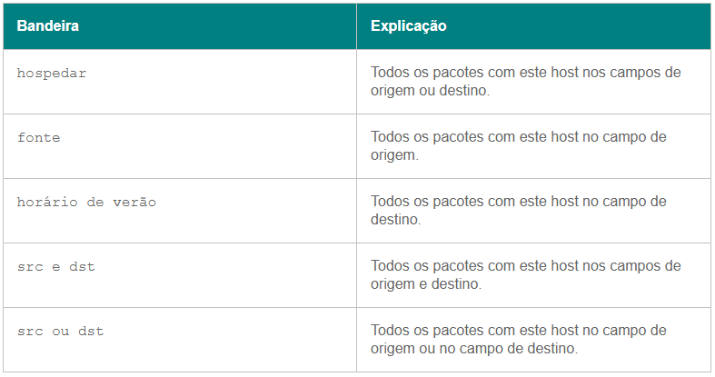
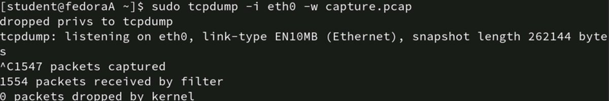
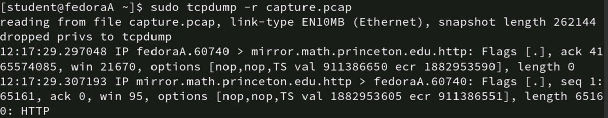
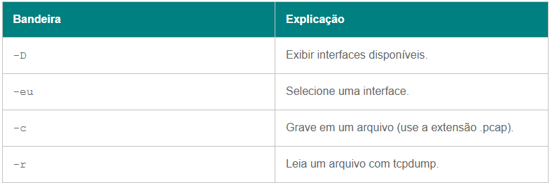

◉ Como capturar e analisar tráfego com tcpdump
Os analisadores de protocolo, também conhecidos como sniffers de pacotes , capturam dados de rede
para exibição ou uso por administradores. As capturas incluem conteúdo da camada de transporte,
informações da camada de aplicação e informações de cabeçalho, como endereços físicos e lógicos. Os
administradores de rede geralmente acham essas informações mais úteis do que a carga útil de dados real.
A seguir estão três razões principais pelas quais os administradores de rede capturam pacotes:
Segurança. Pacotes capturados expõem dados inseguros, seja no contexto de testes de penetração ou ataques
maliciosos de espionagem.
Solução de problemas. As informações de cabeçalho são úteis para solucionar problemas de tudo, desde DNS até
filtros de pacotes em roteadores.
Auditoria. As capturas exibem exatamente o que está na rede e não apenas o que você acha que pode estar na
rede. As auditorias verificam se os tipos esperados de tráfego de rede estão presentes.
Tcpdump é uma ferramenta Linux de código aberto comum usada para analisar pacotes. É rápida, direta e
leve. Wireshark é uma ferramenta similar frequentemente usada em conjunto com tcpdump. Este artigo explora
como usar tcpdump para capturar e visualizar pacotes. Ele também aborda como visualizar capturas tcpdump no
Wireshark.
◉ O que é tcpdump?
O utilitário tcpdump roda na linha de comando do Linux. O tcpdump é um aplicativo simples que funciona bem em
servidores Linux sem dispositivos de rede baseados em Linux, uma GUI ou vários nós de IoT. Esses atributos dão
ao tcpdump uma vantagem sobre analisadores mais poderosos baseados em GUI, como o Wireshark. O tcpdump também
é programável, o que significa que ele pode habilitar capturas programadas.
◉ Como instalar o tcpdump
Muitas distribuições Linux incluem tcpdump, especialmente aquelas usadas para redes empresariais. Se sua
distribuição favorita não o tiver, use seu gerenciador de pacotes preferido para instalá-lo.
No Red Hat e distribuições similares, digite o seguinte comando:
# dnf instalar tcpdump
No Debian e distribuições similares, digite o seguinte comando:
# apt instalar tcpdump
Usuários do MacOS podem gerenciar o tcpdump com o seguinte comando brew :
# preparar instalação tcpdump
Como o tcpdump é open source, você também pode compilá-lo você mesmo. Verifique o site oficial para mais
informações e documentação.
O Tcpdump está pronto para uso imediatamente após a instalação.
◉ Como usar o tcpdump
O Tcpdump contém muitas opções e personalizações que podem ajudar você a encontrar exatamente o que
quer. Lembre-se de verificar a página principal para explicações e exemplos.
1. Inicie uma captura
Para começar a usar o tcpdump, digite o seguinte comando no terminal Linux:
#tcpdump
Observe que você pode precisar de privilégios sudo .
O Tcpdump exibe pacotes capturados em tempo real. Isso é útil se você sabe o que procurar e se não há muito
tráfego na interface. No entanto, é muito mais provável que sua tela role rapidamente com informações quase
incompreensíveis.

Interrompa a captura com Ctrl+C quando isso ocorrer.
Você precisa de uma maneira de exibir apenas as informações que são úteis para sua tarefa específica. As próximas
seções exploram opções sobre como focar o tcpdump no que você precisa.
2. Selecione uma interface
Uma maneira de restringir a captura é especificar a interface de rede local na qual o analisador captura. Por
exemplo, capturas são possíveis nas interfaces com e sem fio de um laptop. Ainda mais interfaces podem estar em
servidores de rede com várias placas de interface de rede ou roteadores conectados a várias sub-redes.
Use a opção -i para selecionar a interface. Para exibir as interfaces disponíveis, digite tcpdump -D .

Depois de identificar a interface que deseja usar, digite seu nome após a opção -i :
# tcpdump -i eth0
Este filtro ajuda a evitar que dados cheguem em quantidades esmagadoras dos resultados da captura. No entanto,
você provavelmente deseja filtrar os resultados ainda mais.
3. Selecione as informações do host
Você provavelmente tem uma boa ideia do que procurar em cenários de solução de problemas ou testes de
penetração . Você provavelmente também sabe de onde os pacotes que você precisa vêm ou vão. Especifique os
endereços IP de origem ou destino que você quer que o tcpdump observe com os seguintes sinalizadores.

Para capturar pacotes de um host específico, digite o seguinte comando:
# tcpdump -i eth0 host 10.1.1.42
Se você quiser tráfego originado apenas de 10.1.1.42, digite o seguinte comando:
# tcpdump -i eth0 src host 10.1.1.42
Desenvolva parâmetros de captura mais complexos com os operadores and ou or .
4. Filtrar por número de porta
Você pode estar mais interessado em um tipo de tráfego do que nos hosts envolvidos. Nesse caso, use um filtro
baseado em números de porta. Se você precisar de tráfego Simple Mail Transfer Protocol , digite o
seguinte comando:
# tcpdump -i eth0 dst porta 25
Se você quiser encontrar tráfego web inseguro, digite o seguinte comando:
# tcpdump -i eth0 dst porta 80
5. Grave a captura em um arquivo
Uma desvantagem dos exemplos acima é que o tcpdump exibe todos os resultados na tela. Eles podem passar muito
rápido para analisar ou detectar padrões. Geralmente é melhor gravar os resultados da captura em um arquivo.
Use a opção -w com um nome de arquivo para especificar um destino.
# tcpdump -i eth0 -w captura.pcap
Certifique-se de usar a extensão de arquivo .pcap. Os resultados da captura não são utilizáveis como um arquivo
de texto. Além disso, o Wireshark pode abrir o arquivo tcpdump se ele tiver a extensão .pcap.

◉ Ver resultados da captura
Agora que você tem um arquivo de captura para trabalhar, você pode exibir os resultados de duas maneiras: com
tcpdump ou Wireshark. O próprio Tcpdump pode ler o arquivo, mas você pode achar vantajoso usar o Wireshark.
◉ Visualize o arquivo de captura com tcpdump
Para visualizar o arquivo com tcpdump, digite o seguinte comando:
# tcpdump -r captura.pcap

Use comandos como grep ou awk para procurar as informações específicas que você precisa.
◉ Visualize o arquivo de captura com o Wireshark
Se você tiver o Wireshark instalado em outro sistema, como Linux, macOS ou Windows, o Wireshark pode abrir
arquivos PCAP. A interface do Wireshark é mais amigável e flexível do que o tcpdump, especialmente ao lidar
com vários arquivos de captura de várias máquinas.
Para visualizar o arquivo PCAP, inicie o Wireshark, selecione Arquivo , clique em Abrir e navegue até o local
do arquivo — provavelmente um compartilhamento de rede ou um diretório local para o qual você copiou o arquivo
do sistema original.
Agora, você tem o poder de pesquisa, filtragem e análise do Wireshark à sua disposição em uma interface gráfica
útil.
Considere um cenário em que você captura pacotes em vários roteadores, alguns dispositivos IoT e dois de seus
servidores como parte de uma auditoria de rede ou solução de problemas de incidentes . Centralize os arquivos
de captura em um compartilhamento de rede e, em seguida, abra os arquivos com o Wireshark em sua estação de
trabalho de uso diário local.
◉ Melhores práticas para captura de pacotes tcpdump
O Tcpdump é uma ferramenta útil dentro dos limites de seu uso. As opções iniciais são diretas, e a capacidade
de gravar em um arquivo é essencial. O Tcpdump é leve e roda na linha de comando, então é utilizável em
praticamente qualquer sistema baseado em Linux.
As opções comuns para começar a usar o tcpdump incluem as seguintes.

Na próxima vez que você planejar auditar ou solucionar problemas em sua rede , considere as seguintes opções de
tcpdump:
• Filtrar tráfego por interface.
• Filtre o tráfego por origem e destino.
• Filtrar tráfego por número de porta.
• Leia e grave capturas com -r e -w , respectivamente.
• Grave a captura em um arquivo e analise-a no Wireshark.
• Considere criar um script para todas as capturas que você pretende repetir.